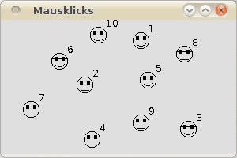

Ein Mouse-Event entsteht, wenn der Anwender innerhalb der Client-Area
des Fensters eine der Maustasten drückt oder loslässt. Dabei
reagiert das Programm sowohl auf Klicks der linken als auch - falls
vorhanden - der rechten Maustaste und zeigt an, welche der Umschalttasten
[STRG], [ALT],
[UMSCHALT] oder [META]
während des Mausklicks gedrückt waren. Des Weiteren ist
es möglich, zwischen einfachen und doppelten Mausklicks zu unterscheiden.
Ein Empfänger für Mouse-Events muss das Interface MouseListener
implementieren und bekommt Events des Typs MouseEvent
übergeben. MouseEvent
erweitert die Klasse InputEvent
und stellt neben getID
und getSource
eine Reihe zusätzlicher Methoden zur Verfügung, die wichtige
Informationen liefern. Die Registrierung der Empfängerklasse
erfolgt mit der Methode addMouseListener,
die in allen Klassen zur Verfügung steht, die aus Component
abgeleitet wurden:
Tabelle 29.3 gibt
eine Übersicht der Methoden von MouseListener
und erklärt ihre Bedeutung:
| Ereignismethode |
Bedeutung |
| mousePressed |
Eine Maustaste wurde gedrückt. |
| mouseReleased |
Die gedrückte Maustaste wurde losgelassen.
|
| mouseClicked |
Eine Maustaste wurde gedrückt und wieder
losgelassen. Diese Methode wird nach mouseReleased
aufgerufen. |
| mouseEntered |
Der Mauszeiger wurde in den Client-Bereich
der auslösenden Komponente hineinbewegt. |
| mouseExited |
Der Mauszeiger wurde aus dem Client-Bereich
der auslösenden Komponente herausbewegt. |
Tabelle 29.3: Methoden von MouseListener
getX
liefert die x- und getY
die y-Koordinate des Punkts, an dem der Mauszeiger sich beim
Auftreten des Ereignisses befindet. getPoint
liefert dieselbe Information zusammengefasst als Point-Objekt.
Des Weiteren gibt es in MouseEvent
die Methode isPopupTrigger,
mit der abgefragt werden kann, ob das Klickereignis den Aufruf eines
Popup-Menüs anzeigen soll. Wir werden darauf in Kapitel 30
zurückkommen.
Die Methode getClickCount
liefert die Anzahl der Mausklicks, die dem aktuellen Ereignis zugeordnet
ist:
Normalerweise hat dieser Zähler den Wert 1, bei Mehrfachklicks
gibt es aber auch MouseEvents
mit dem Wert 2 oder (je nach Schnelligkeit der Klicks) noch höheren
Werten. Die Abfrage von getClickCount
kann dazu verwendet werden, auf Doppelklicks zu reagieren. Hierzu
ist lediglich beim Aufruf von mousePressed
oder mouseClicked
zu überprüfen, ob getClickCount
den Wert 2 liefert. In diesem Fall handelt es sich um einen Doppelklick.
Zu beachten ist, dass bei einem Doppelklick zwei aufeinanderfolgende
mousePressed-mouseReleased-mouseClicked-Sequenzen
gesendet werden. In der ersten hat der Zähler den Wert 1, um
den ersten (einfachen) Mausklick zu signalisieren, und erst in der
zweiten steht er auf 2. Vor einem Doppelklick wird also immer erst
der zugehörige Einzelklick übertragen.
Eine alternative Methode, Doppelklicks zu erkennen, besteht darin,
die Zeitspanne zwischen zwei Klicks und den Abstand der beiden Koordinatenpaare
voneinander zu messen und bei hinreichend kleinen Differenzen einen
Doppelklick anstelle zweier Einfachklicks zu melden. Dazu wird mit
der Methode getWhen
der Klasse InputEvent
der Zeitpunkt (in Millisekunden) und mit getPoint
oder getX
und getY
die Mausposition zweier aufeinanderfolgender Events bestimmt:
Diese Vorgehensweise hat den Vorteil, dass die zeitliche und positionelle
Toleranz für Doppelklicks selbst beeinflusst werden kann, was
bei dem oben beschriebenen Standardverfahren nicht möglich ist.
Neben den bisher besprochenen Methoden stehen die aus InputEvent
geerbten Methoden zur Verfügung. InputEvent
ist die gemeinsame Basisklasse von MouseEvent
und KeyEvent
und stellt Methoden zur Verfügung, die generelle Informationen
über den Zustand der Umschalttasten [STRG],
[ALT], [UMSCHALT]
oder [META] zum Zeitpunkt des
Ereignisses liefern:
public boolean isShiftDown()
public boolean isControlDown()
public boolean isMetaDown()
public boolean isAltDown()
|
java.awt.event.InputEvent |
Das folgende Programm ist ein einfaches Beispiel für die Reaktion
auf Mausklicks. Es zeichnet an den Stellen, wo die Maustaste gedrückt
wird, einen kleinen Smiley auf den Bildschirm:
001 /* Listing2903.java */
002
003 import java.awt.*;
004 import java.awt.event.*;
005
006 public class Listing2903
007 extends Frame
008 {
009 public static void main(String[] args)
010 {
011 Listing2903 wnd = new Listing2903();
012 wnd.setSize(300,200);
013 wnd.setLocation(200,100);
014 wnd.setVisible(true);
015 }
016
017 public Listing2903()
018 {
019 super("Mausklicks");
020 addWindowListener(new WindowClosingAdapter(true));
021 addMouseListener(new MyMouseListener());
022 }
023
024 class MyMouseListener
025 extends MouseAdapter
026 {
027 int cnt = 0;
028
029 public void mousePressed(MouseEvent event)
030 {
031 Graphics g = getGraphics();
032 int x = event.getX();
033 int y = event.getY();
034 if (event.getClickCount() == 1) { //Gesicht
035 ++cnt;
036 //Kopf und Augen
037 g.drawOval(x-10,y-10,20,20);
038 g.fillRect(x-6,y-5,4,5);
039 g.fillRect(x+3,y-5,4,5);
040 //Mund
041 if (event.isMetaDown()) { //grimmig
042 g.drawLine(x-5,y+7,x+5,y+7);
043 } else { //lächeln
044 g.drawArc(x-7,y-7,14,14,225,100);
045 }
046 //Zähler
047 g.drawString(""+cnt,x+10,y-10);
048 } else if (event.getClickCount() == 2) { //Brille
049 g.drawLine(x-9,y-3,x+9,y-3);
050 }
051 }
052 }
053 }
|
Listing2903.java |
Listing 29.3: Reaktion auf Mausklicks
Beim Drücken der linken Maustaste lächelt das Gesicht, bei
der rechten sieht es grimmig aus. Bei einem Doppelklick bekommt der
Smiley zusätzlich eine Brille aufgesetzt. Die Ausgabe des Programms
sieht beispielsweise so aus:

Abbildung 29.2: Die Ausgabe des Mausklick-Programms
Erwähnenswert ist die Tatsache, dass das Programm ohne paint-Methode
auskommt. Tatsächlich beschafft die Methode mousePressed
sich die zum Zeichnen erforderliche Instanz der Klasse Graphics
durch Aufruf von getGraphics
selbst. Die Methode getGraphics
gibt immer den Grafikkontext des aktuellen Fensterobjekts zurück.
Das gelieferte Graphics-Objekt
kann auf dieselbe Weise verwendet werden wie das als Parameter an
paint
übergebene.